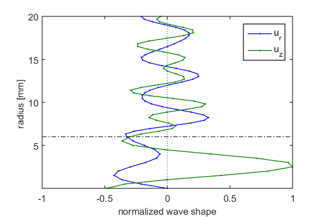
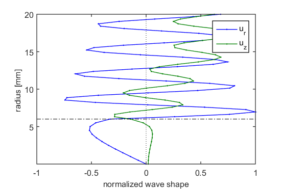
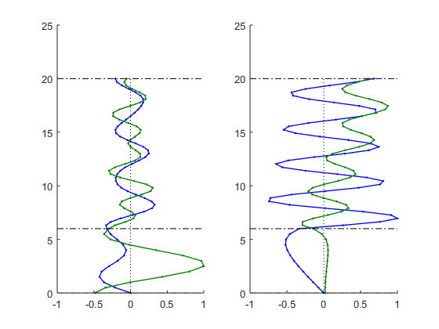

Contents
% 题目：多个fiure文件以子图的形式重绘到一个figure中 % 参数：无 % 功能： % 读取多个子图的figure文件 % 按subplot方式，重绘到一个figure图像中 % 对相应的导波Ev数据重排列 % 调用：无 % 作者：马骋 % 2016.12.20 @HIT
子图读入
clc,clear,close all fig(1) = open('fig1.fig'); % 打开fig文件 fig(2) = open('fig2.fig'); ax(1) = get(fig(1), 'CurrentAxes'); % 获取坐标轴对象 ax(2) = get(fig(2), 'CurrentAxes'); 
重绘图像到新的figure
str_title = {'780 kHz, 51 db','780 kHz, 279 db'}; % 预设子图标题文字
figure
for iloop = 1:2
subplot(1,2,iloop) % 子图循环
axChildren = get(ax(iloop),'Children'); % 获取axes所有子对象
copyobj(axChildren, gca); % 复制对象到子图的axes
% ylim([0 20]),grid on % 图像参数设置
% xlabel('normalized mode shape')
% ylabel('radius [mm]')
% title(str_title{iloop})
end
close(fig) % 关闭原始图像
